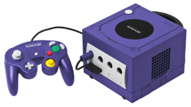

welcome to Exiled Resistance Gamers emulation archive -GameCube - Discs
back
home
DreamWorks Shrek - SuperSlam (USA).iso
Kirby Air Ride (USA).iso
Legend of Zelda, The - Collector's Edition (USA).iso
Legend of Zelda, The - Four Swords Adventures (USA).iso
Legend of Zelda, The - Ocarina of Time & Master Quest (USA).iso
Legend of Zelda, The - The Wind Waker (USA).iso
Legend of Zelda, The - Twilight Princess (USA).iso
Luigi's Mansion (USA).iso
Mario Golf - Toadstool Tour (USA).iso
Mario Kart - Double Dash!! (USA) (Bonus Disc).iso
Mario Kart - Double Dash!! (USA).iso
Mario Party 4 (USA) (Rev 1).iso
Mario Party 4 (USA).iso
Mario Party 5 (USA).iso
Mario Party 6 (USA).iso
Mario Party 7 (USA) (Rev 1).iso
Metroid Prime 2 - Echoes (USA) (Bonus Disc).iso
Metroid Prime 2 - Echoes (USA).iso
Paper Mario - The Thousand-Year Door (USA).iso
Pikmin (USA) (Rev 1).iso
Pikmin 2 (USA).iso
Pokemon XD - Gale of Darkness (USA).iso
Sonic Adventure 2 - Battle (USA) (En,Ja,Fr,De,Es).iso
Sonic Adventure DX - Director's Cut (USA) (En,Ja,Fr,De,Es).iso
Sonic Gems Collection (USA).iso
Sonic Heroes (USA) (En,Ja,Fr,De,Es,It).iso
Sonic Mega Collection (USA).iso
Spyro - Enter the Dragonfly (USA).iso
Star Fox - Assault (USA).iso
Star Fox Adventures (USA) (Rev 1).iso
Super Mario Strikers (USA).iso
Super Mario Sunshine (USA).iso
Super Smash Bros. Melee (USA) (En,Ja) (Rev 2).iso